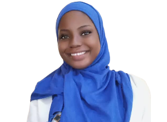

Resume

Yahaya Hameedat Agbeke.
Address: 12 Oshikoya Street, Ijede Ikorodu, Lagos State, Nigeria
Phone +234 (0)81 2939 6284
hameedatyahaya@gmail.com
Education
Lagos State University.
- BSc (Hons) Fisheries And Aquatic Biology.
- CGPA: 3.73 (Second class upper division)
Experiences
Skillharvest Cohort 2.0, 2024
- I was a member of skill harvest cohort 2.0 for product design.
- I was the class's second head.
- I collaborated with fellow students on a group project to develop an online food ordering and delivery platform and a farm-to-table mobile app for the Ogbomosho Agricultural Community.
- I was an elite pupil who consistently demonstrated devotion and hard work, as evidenced by their excellent attendance records, impressive portfolio, town hall/webinar commitment, and finished assignments.
International Institute For Tropical Agriculture (IITA)
- Took part in an agribusiness training on social media marketing and e-commerce
- Acquired knowledge of office administration and leadership.
- Acquired tools and strategies for effective office administration
Sustainable Ocean Alliance, Nigeria (SOA)
- Volunteer to take part in the Marine Litter Literacy Experimental Project during Idado Community in Ibeju Lekki on Saturday, November 11, 2023.
- Obtained a trophy and certificate of distinction in appreciation of my involvement and my achievement as the 2024 Marine Litter Literacy Contest winner.
Certificate
Click here to view IITA Certificate
Click here to view SOA Certificate
Others
- Language: English (Fluent)
- Intrest: Coding , Product design, Agrobusiness.
{kind=link}